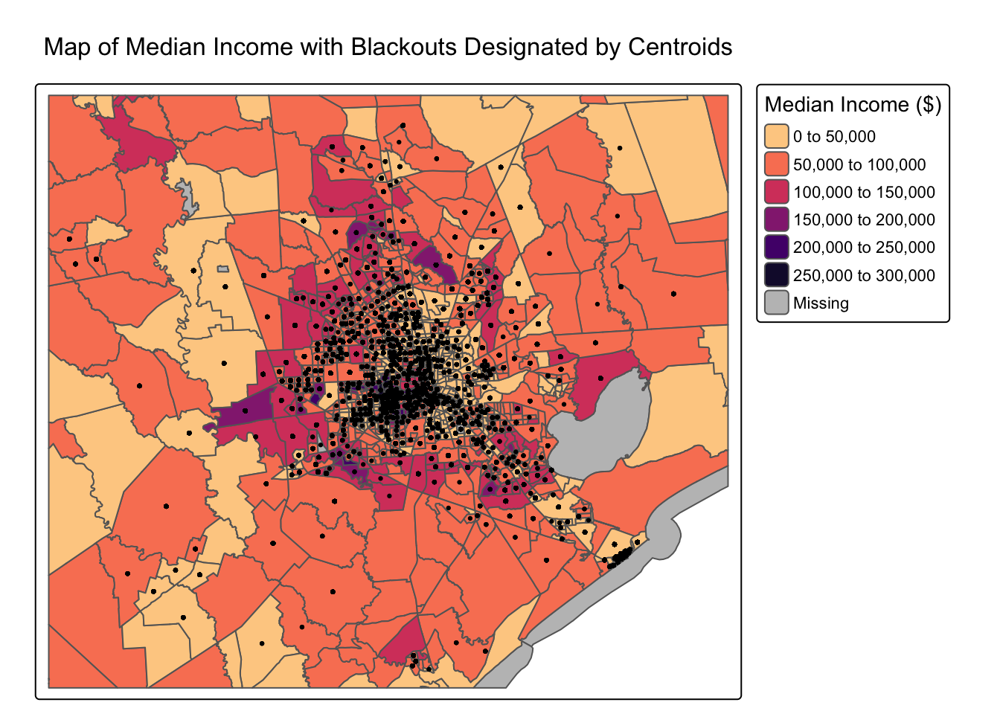
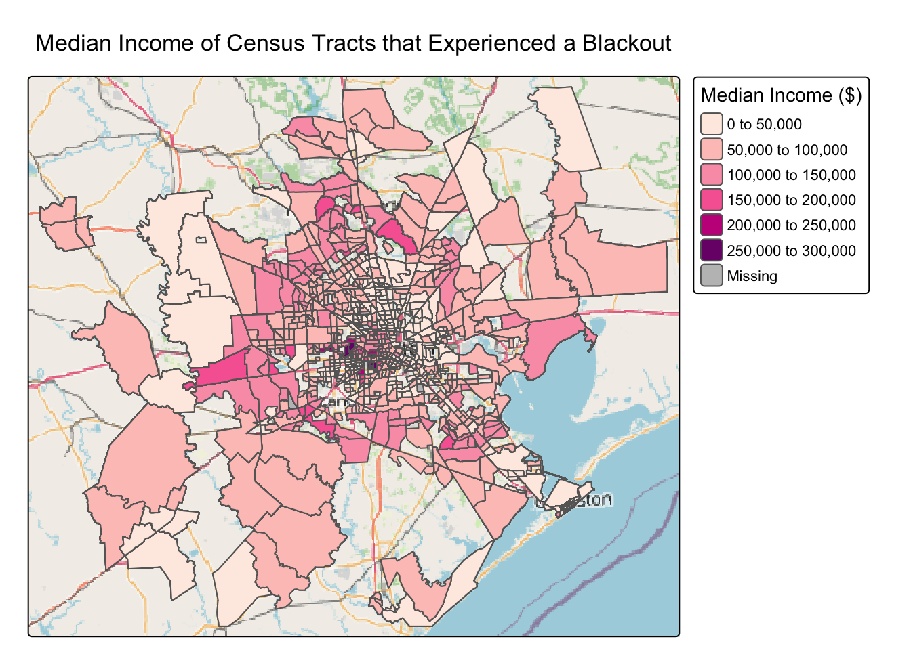
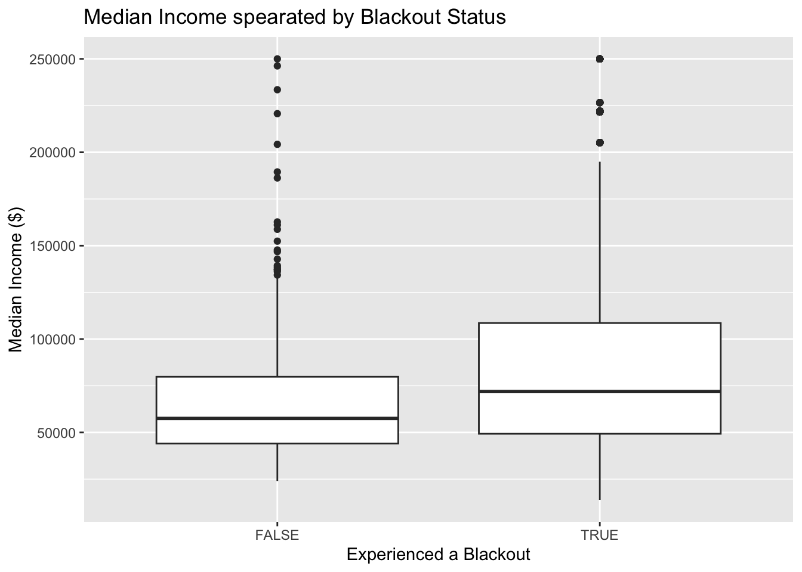

Exploring the Socioeconomic Impacts of the 2021 Blackout in Houston, Texas
Problem Statement
Eestimate the number of homes in Houston that lost power as a result of the first two storms during the Houston Blackouts. We will also investigate if socioeconomic factors are predictors of communities recovery from a power outage.
Background
In February 2021, the state of Texas suffered a major power crisis, which came about as a result of three severe winter storms sweeping across the United States on February 10–11, 13–17, and 15–20.”1 For more background, check out these engineering and political perspectives.
Data Sources
Night lights
Use NASA’s Worldview to explore the data around the day of the storm. There are several days with too much cloud cover to be useful, but 2021-02-07 and 2021-02-16 provide two clear, contrasting images to visualize the extent of the power outage in Texas.
VIIRS data is distributed through NASA’s Level-1 and Atmospheric Archive & Distribution System Distributed Active Archive Center (LAADS DAAC). Many NASA Earth data products are distributed in 10x10 degree tiles in sinusoidal equal-area projection. Tiles are identified by their horizontal and vertical position in the grid. Houston lies on the border of tiles h08v05 and h08v06. We therefore need to download two tiles per date.
Roads
Typically highways account for a large portion of the night lights observable from space (see Google’s Earth at Night). To minimize falsely identifying areas with reduced traffic as areas without power, we will ignore areas near highways.
OpenStreetMap (OSM) is a collaborative project which creates publicly available geographic data of the world. Ingesting this data into a database where it can be subsetted and processed is a large undertaking. Fortunately, third party companies redistribute OSM data. We used Geofabrik’s download sites to retrieve a shapefile of all highways in Texas and prepared a Geopackage (.gpkg file) containing just the subset of roads that intersect the Houston metropolitan area. Typically highways account for a large portion of the night lights observable from space (see Google’s Earth at Night). To minimize falsely identifying areas with reduced traffic as areas without power, we will ignore areas near highways.
gis_osm_roads_free_1.gpkgOpenStreetMap (OSM) is a collaborative project which creates publicly available geographic data of the world. Ingesting this data into a database where it can be subsetted and processed is a large undertaking. Fortunately, third party companies redistribute OSM data. We used Geofabrik’s download sites to retrieve a shapefile of all highways in Texas and prepared a Geopackage (.gpkg file) containing just the subset of roads that intersect the Houston metropolitan area.
Houses
We can also obtain building data from OpenStreetMap. We again downloaded from Geofabrick and prepared a GeoPackage containing only houses in the Houston metropolitan area.
gis_osm_buildings_a_free_1.gpkg
gis_osm_buildings_a_free_1.gpkg
Socioeconomic
We cannot readily get socioeconomic information for every home, so instead we obtained data from the U.S. Census Bureau’s American Community Survey for census tracts in 2019. The folderACS_2019_5YR_TRACT_48.gdb is an ArcGIS “file geodatabase”, a multi-file proprietary format that’s roughly analogous to a GeoPackage file.
You can use st_layers() to explore the contents of the geodatabase. Each layer contains a subset of the fields documents in the ACS metadata.
The geodatabase contains a layer holding the geometry information, separate from the layers holding the ACS attributes. You have to combine the geometry with the attributes to get a feature layer that sf can use. The geodatabase contains a layer holding the geometry information, separate from the layers holding the ACS attributes. You have to combine the geometry with the attributes to get a feature layer that sf can use.
Analysis and Results
For step by step walk-through on the initial data cleaning and wrangling can be found on my GitHub repository.
There are 3 steps to this analysis:
1. Finding the locations of Blackouts
This analysis will be based on remotely-sensed night lights data, acquired from the Visible Infrared Imaging Radiometer Suite (VIIRS) onboard the Suomi satellite. In particular, we will use the VNP46A1 to detect differences in night lights before and after the storm to identify areas that lost electric power.
2. Find homes impacted by blackouts
To determine the number of homes that lost power, we will spatially join these areas with OpenStreetMap data on buildings and roads. To determine the number of homes that lost power, you link (spatially join) these areas with OpenStreetMap data on buildings and roads.
3. Investigate socioeconomic factors
To investigate potential socioeconomic factors that influenced recovery, we will link this analysis with data from the US Census Bureau. To investigate potential socioeconomic factors that influenced recovery, we will link this analysis with data from the US Census Bureau. This data can be visualized from the following maps and plot.
#Create a map of median income by census tract, designating which tracts had blackoutstm_shape(census_houston) +tm_polygons("median_income", title ="Median Income ($)",palette ="magma") +tm_title(text ="Map of Median Income with Blackouts Designated by Centroids")+tm_shape(trac_with_blackout) +tm_dots()
Deprecated tmap v3 code detected. Code translated to v4
Warning: Some legend items or map compoments do not fit well (e.g. due to the
specified font size).

tm_shape(trac_with_blackout) +tm_polygons("median_income", title ="Median Income ($)",palette ="RdPu") +tm_title(text ='Median Income of Census Tracts that Experienced a Blackout')+tm_basemap(server ="OpenStreetMap")

tm_shape(trac_without_blackout) +tm_polygons("median_income", title ="Median Income ($)",palette ="RdPu") +tm_title(text ='Median Income of Census Tracts that did not Experience a Blackout')+tm_basemap(server ="OpenStreetMap")
Deprecated tmap v3 code detected. Code translated to v4
Warning: Some legend items or map compoments do not fit well (e.g. due to the
specified font size).
ggplot(combined, aes(x=VNP46A1.A2021038.h08v05.001.2021039064328.tif, y=median_income))+geom_boxplot()+labs(x ="Experienced a Blackout",y ='Median Income ($)',title ="Median Income spearated by Blackout Status")

Conclusions
This distribution was originally surprising to me because I expected there to be some information about lower-income census tracts being affected by the blackouts. I noticed from this data that so many buildings were affected by the blackouts; they weren’t based on income. The income from the census tracts that didn’t experience a blackout was lower than the census tracts that did because so few census tracts avoided the blackouts. The main limitation that I could identify in this study is that the original data wasn’t available in the same projection. In order to join the spatial data, we had to reproject the data, which required the use of the st_make_valid() function in a few places in order for the code to run. Ideally, we could find data that was available in the same projection, so the geometries were more consistent.
Future Work
One of the most notable thigns about this blackout is that Houston is generally faily well prepared for Hot weather, but this proved their energy systems aren’t resilient to extreme cold weather. I would be interested to see if power outages in Houston due to hot weather have a stronger socioeconomic component. I would also want to replicate this analysis for other cities during natural disasters.
Citations
ERCOT Blackout 2021 | Energy Institute. (n.d.). The University of Texas at Austin. https://energy.utexas.edu/research/ercot-blackout-2021
Level-1 and Atmosphere Archive & Distribution System Distributed Active Archive Center - LAADS DAAC. (2017, February 22). https://ladsweb.modaps.eosdis.nasa.gov/
Practical Engineering. (2021, March 23). What really happened during the Texas power grid outage? [Video]. YouTube. https://www.youtube.com/watch?v=08mwXICY4JM
US Census Bureau. (2023, November 30). American Community Survey (ACS). Census.gov. https://www.census.gov/programs-surveys/acs
Vox. (2021, March 4). Texas’s power disaster is a warning sign for the US [Video]. YouTube. https://www.youtube.com/watch?v=Zcrsgdl_hP0
Wikipedia contributors. (2023, August 12). Visible Infrared Imaging Radiometer Suite. Wikipedia. https://en.wikipedia.org/wiki/Visible_Infrared_Imaging_Radiometer_Suite
@online{childers2023,
author = {Childers, Heather},
title = {Exploring the {Socioeconomic} {Impacts} of the 2021
{Blackout} in {Houston,} {Texas}},
date = {2023-12-10},
url = {hmchilders.github.io/blogs/2023-12-15},
langid = {en}
}
For attribution, please cite this work as:
Childers, Heather. 2023. “Exploring the Socioeconomic Impacts of
the 2021 Blackout in Houston, Texas.” December 10, 2023. hmchilders.github.io/blogs/2023-12-15.